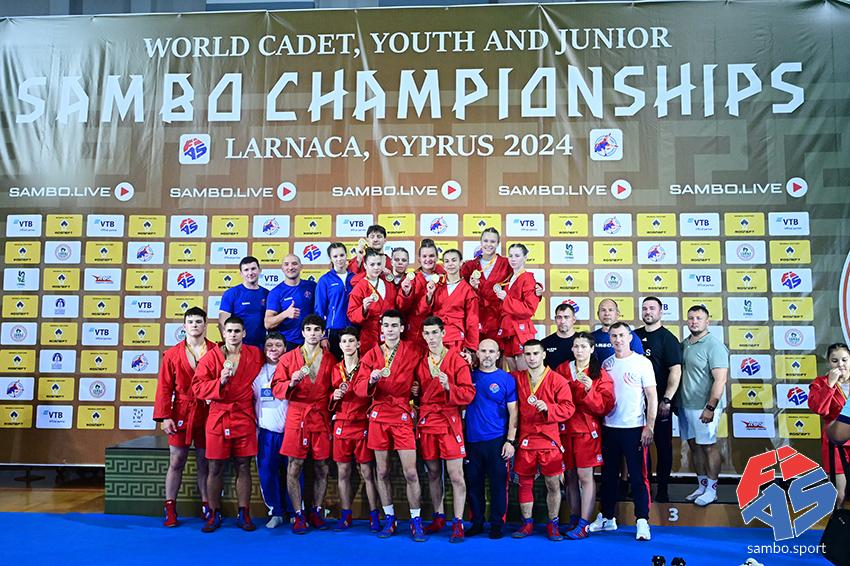
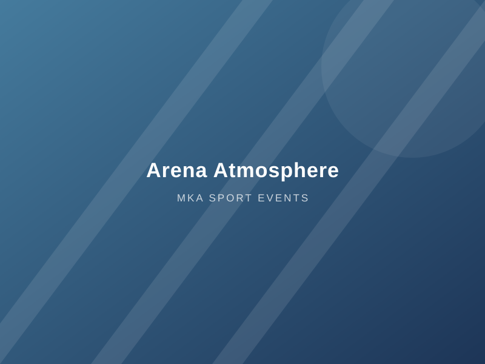
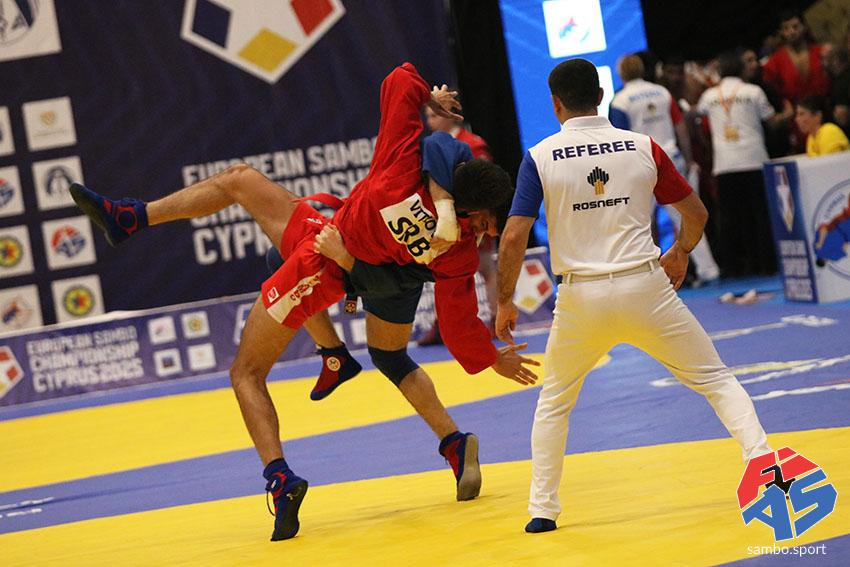
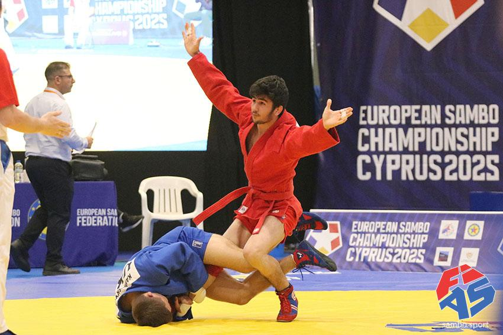
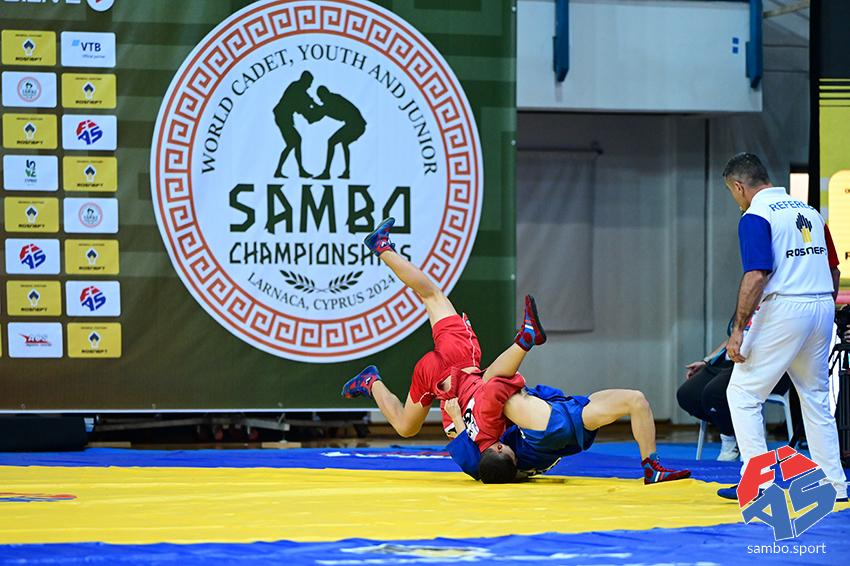
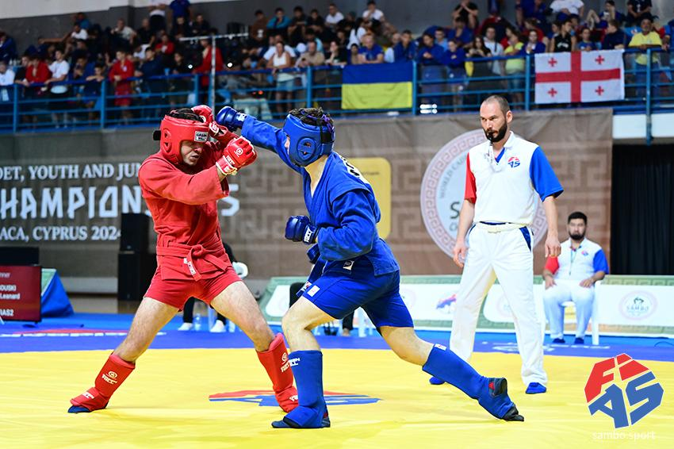
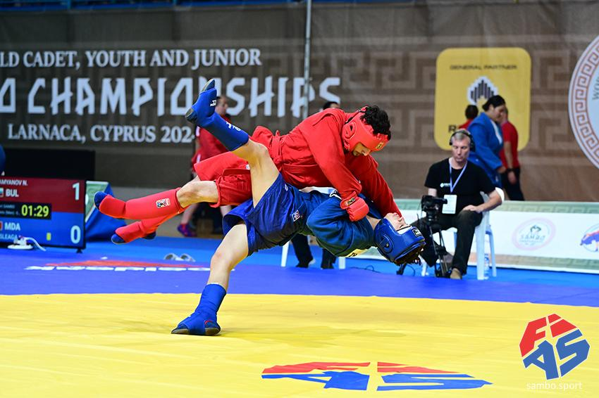

Big events. Zero drama.
We plan and deliver major sports events in Cyprus, from the first federation meeting to the closing ceremony — with sambo World and European Championships as our speciality.

Sambo World & European Championships
Sambo is where our reputation was built. Cyprus has hosted continental and world-level sambo championships — the European Sambo Championship in 2025 and the World Cadet, Youth and Junior Sambo Championships in Larnaca in 2024 — with hundreds of athletes, dozens of visiting delegations and live broadcasts. We work to the same FIAS technical standards on every event we support.
- Venue design to sambo competition standards
- Certified competition mats, scoreboards and timing systems
- Delegation management: visas, accreditation, hotels, transport
- Anti-doping, medical and referee coordination

Any sport, any format
The same team, systems and supplier network that deliver championships also run open tournaments, national finals and multi-sport festivals across Cyprus.
Whether you are a federation bidding for a major title or a club hosting its first open tournament, we scale the service to fit your event and your budget.
Tell us about your eventSambo championships held in Cyprus
Photographs from two major international sambo championships staged in Cyprus under FIAS and European Sambo Federation regulations — the level of event our venues, mats and operations teams are built for.






What we take off your plate
One partner, one contract, one point of contact — covering every workstream of a major sports event.
Bid & concept
Feasibility studies, budgets and bid documents that win hosting rights for your federation.
Venue & overlay
Venue selection, field-of-play build, warm-up areas, branding and spectator experience.
Delegations & logistics
Accreditation, hotels, transport, catering and airport operations for teams and officials.
Sport operations
Draw and results systems, referees, medical services, anti-doping and ceremony protocol.
Broadcast & media
Live streaming, TV production, press operations and social media coverage.
Volunteers & staffing
Recruitment, training and management of volunteer and professional event teams.
Championship sport in Cyprus
The 2025 and 2024 championships below are major international sambo events held in Cyprus. The earlier entries are a placeholder listing — the full event portfolio is available on request.
-
2025
European Sambo Championship — Cyprus
The European Sambo Federation's continental championship, hosted in Cyprus.
-
2024
World Cadet, Youth & Junior Sambo Championships — Larnaca
FIAS world championships for the cadet, youth and junior age groups, hosted in Larnaca across sport and combat sambo.
-
2023
Mediterranean Judo Open — Larnaca
Open tournament with 600 competitors across age groups, run on eight competition mats over one weekend.
-
2022
Cyprus International Sambo Cup — Nicosia
Annual invitational tournament hosted in Nicosia for visiting and local clubs.
Bidding for a championship? Hosting a tournament?
Get an experienced delivery partner on board early — it makes every later decision easier and cheaper.
Request an Offer